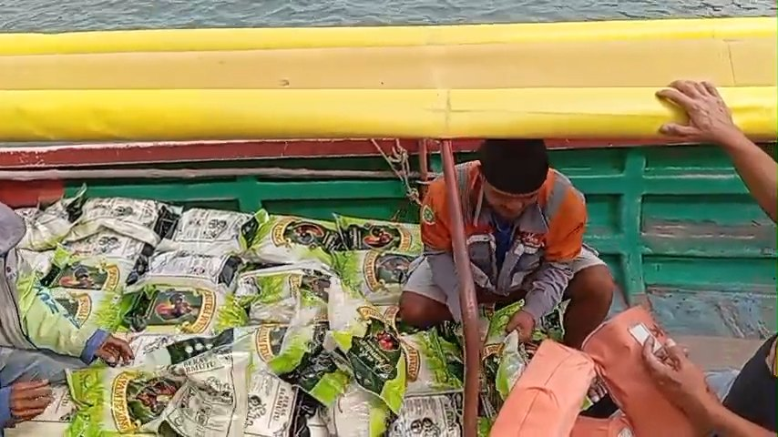

Salurkan infaq & sedekah.
“Perumpamaan orang yang menginfakkan hartanya di jalan Allah seperti sebutir biji yang menumbuhkan tujuh tangkai, pada setiap tangkai ada seratus biji.” — QS. Al-Baqarah: 261
Rekening resmi
Transfer ke rekening yayasan
Semua rekening atas nama Yayasan Asma Husnul Khatimah. Ketuk “Salin” untuk menyalin nomor.
Rekening resmi
Bank Riau Kepri Syariah
101-20-00123
a.n. Yayasan Asma Husnul Khatimah
Rekening resmi
Bank Syariah Indonesia (BSI)
714-889-0123
a.n. Yayasan Asma Husnul Khatimah
Penyaluran
Ke mana infaq Anda pergi

TPQ Husnul Khatimah
Kegiatan belajar Al-Qur'an, munaqasyah, dan wisuda santri.
Paket sembako
Sembako untuk dhuafa, lansia, dan penarik becak di Belakang Padang.
Takjil Ramadhan
Takjil berbuka puasa untuk warga dan jamaah selama bulan Ramadhan.
Konfirmasi
Setelah transfer
- TransferKirim infaq sesuai keikhlasan ke salah satu rekening di atas.
- Simpan buktiSimpan struk ATM atau tangkapan layar mobile banking.
- Kirim ke bendaharaKirim bukti transfer ke WhatsApp resmi yayasan.
- DicatatBendahara mencatat nama dan doa Anda dalam laporan infaq.
Sudah transfer?
Kirim bukti transfer agar infaq Anda tercatat.